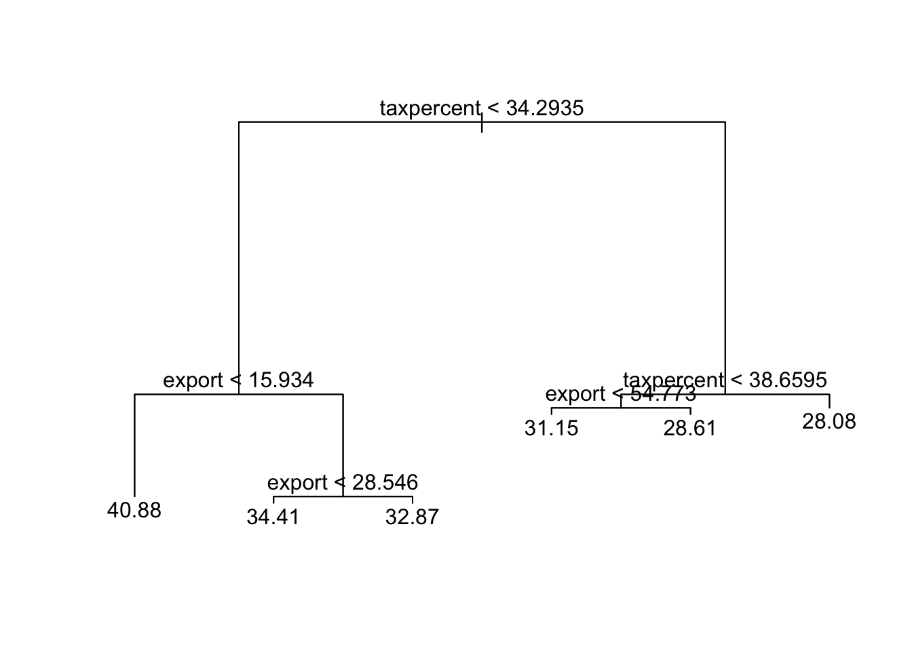

library(tidyverse)
library(tree)Regression Trees
Lesson 1.5, Applied Machine Learning
Table of Contents
Remember to load tidyverse. We will also need the package tree.
Let us also load the dataset we will be using for these examples (feel free to load your own dataset)
df <- read_csv("voctaxdata.csv")Regression Trees
Regression Trees are an alternative way to obtain estimations of \(y\) from \(x\). Instead of modelling how \(y\) changes with every unit change in \(x\), regression trees instead use stratification:
- Tree-based methods will divide the independent variable \(x\) into 2 regions, splitting \(x\) at some value \(s\)
- For example, if we had an \(x\) variable with values between \(0\) and \(100\), we could split the variable at \(x=50\) to create two regions.
- Calculate the mean outcome value \(y\) in each region of \(x\)
- For example, if we had split \(x\) at \(x=50\), we would have 2 regions of \(x\): 0 to 49, and 50 to 100. We would calculate the average \(y\) value of each region.
- Predict \(y\), based on the mean \(y\) of the region which the observation falls into.
- The region in which the observation falls into depends on its value of \(x\). For example, if we follow the splits above, if an observation had \(x=5\), it would be classified in the region of 0 to 49, and its prediction would be the mean \(y\) value of that region’s observations.
If we have to split \(x\) into regions, at what threshold of \(x\) should the regions be split at?
- For example, if we had an \(x\) variable with values between \(0\) and \(100\), we could split the variable at \(x=50\), or \(x=20\), or really any value of \(x\).
To determine at which threshold to split \(x\), the computer will find the optimal \(x\) threshold for splitting based on which value reduces the residual sum of squares (RSS) the most.
\[ RSS = \sum\limits_{i=1}^{n} (y_i - \hat{y}_i) \]
- Essentially, the computer tests all possible \(x\) values in which we could split by, and finds the one that reduces the residual sum of squares the most.
- This is very similar to OLS, which finds coefficient values that minimises the sum of squared errors (also \(\sum\limits_{i=1}^{n} (y_i - \hat{y}_i)\) )
Once we have split \(x\), find the average \(y\) for the observations in each region, and that is our prediction for the points in the region.
When there are multiple independent variables \(x_1, x_2, ... , x_p\), regression trees will do the following:
- Test all \(x\) variables and the possible split thresholds \(s\) for each.
- Identify the specific \(x\) variable \(x_j\) and specific split threshold \(s\) that results in the greatest reduction in the residual sum of squares.
- Now, divide chosen \(x_j\) at chosen threshold \(s\) to create two regions: \(x_j < s, x_j ≥s\)
- Now, we repeat the process of testing all \(x\) variables (including the one we just chose) and the possible thresholds \(s\) for each. HOWEVER, this time, instead of looking for this through the entire data set, look only inside one of the 2 regions we just created.
- Now, when we split again after finding the optimal \(x\) and \(j\), we only divide one of the 2 subregions we created in step 3.
- Continue dividing each subregions further, until we meet a stopping criterion (this is often that no region has more than 5 observations).
- For each final subregion, find the average \(y\) value of the observations in that subregion, and that is our prediction for all points in that subregion.
Below is an example of a tree regression, with \(y\) being gini index, \(x_1\) is export volume, and \(x_2\) is tax percent. Note the following:
The top division is a split in taxpercent. This tells use that this \(x\) variable with the split point \(x = 34.2935\) is the split that reduces the residual sum of squares the most. This is the most “influential” variable on the prediction.
Notice how after the top division, we go to divide the subregions. We can only further divide subregions already created (no going back to the whole data set).
Notice how the variable taxpercent appears again on the right hand side. This is possible for a variable to occur multiple times.
At the end, you see the numbers at the bottom. These are called leaves, and are the final categories of the tree with their mean of \(y\) labelled.

While regression trees are a cool way to visualise predictions, they tend to have high variance: just slightly changing the data will result in a completely different tree being generated.
- This is an issue, especially if we are interested in predicting out-of-sample observations.
Thus, simple regression trees are almost never used in data science for predictions. The more advanced models of Bagging and Random Forest that build on regression trees are frequently used and solve many of the issues with regression trees.
Regression Trees in R
To conduct Tree Regressions, wee need the package trees:
library(tree)Remember to load tidyverse.
library(tidyverse)Let us also load the dataset we will be using for these examples (feel free to load your own dataset)
df <- read_csv("voctaxdata.csv")Creating the Model in R
Tree regressions in R are conducted using the tree() function. We can view the summary by simply printing the regression variable. We can view a tree plot with the plot() and text() functions. The syntax is as follows:
# remember to load package tree
tree_reg<- tree(Y ~ X1 + X2, data = df)
# see written summary of tree
tree_reg
# create tree plot
plot(tree_example)
text(tree_example)These are the parts of the syntax that can be altered:
tree_reg is the variable I am saving my regression model to. You can name this anything you want to.
Y is the Y variable (Dependent variable) you are trying to predict, and X1, X2,… are the X variables (independent variables) you are using to get your prediction. Replace these with the variables you want to use.
- NOTE: Always put the Y variable before the X variable. Separate the two with a tilda ~
- NOTE: You can add more simply by using a + sign and adding another variable.
df is the name of the data frame that I am drawing these X and Y variables from. Replace this with the name of your data frame.
Prediction in R
If we are interested in prediction, we can use the predict() function. You can predict in-sample data by setting newdata = the data frame you used for regression. You can predict out-of-sample data by using a dataframe with the same variables but new values. The syntax is as follows:
#create new df for comparison of actual and prediction
df_results <- df %>%
select(Y) #optional, may help with readability
# newdata is what values of X1, X2... to predict for.
df_results$prediction <- predict(tree_reg, newdata = df)
# brief glimpse of the results
head(df_results)These are the parts of the syntax that can be altered:
df_results is the results data frame I am creating. You can name this anything you want to.
Y is the Y variable I am trying to predict. Replace this with the name of your Y variable.
tree_reg is the variable I am saved my prior model to. Rename this to what your prior model was named.
df is the name of the data frame that houses the \(x\) values I want to predict for. Replace this with the name of your data frame with the \(x\) values you want to predict for.
Example in R
Take this following example of a tree regression, with \(y\) being gini index, \(x_1\) is export volume, and \(x_2\) is tax percent (same as the figure displayed earlier)
# building a tree
tree_reg <- tree(gini ~ export + taxpercent, data = df)
# making predictions
# create new df for comparison of actual and prediction
df_results <- df %>%
select(gini)
# predict in-sample data
df_results$prediction <- predict(tree_reg, newdata = df)
# brief glimpse of the results
head(df_results)# A tibble: 6 × 2
gini prediction
<dbl> <dbl>
1 33.1 34.4
2 33.1 34.4
3 33.1 34.4
4 33.1 34.4
5 35.4 34.4
6 35.4 34.4Here, you can see the predictions vs. the actual values in my dataframe df_results.